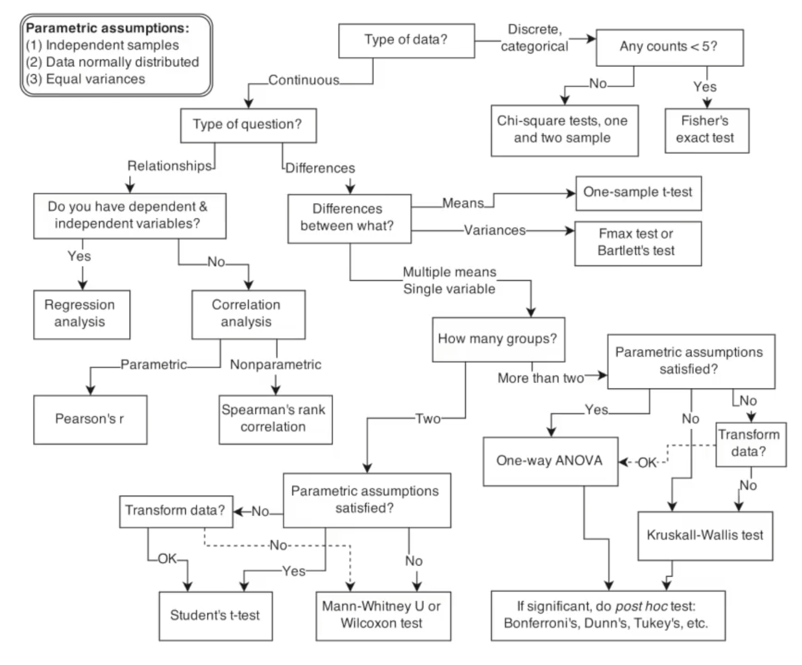
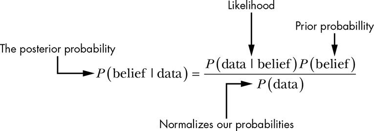
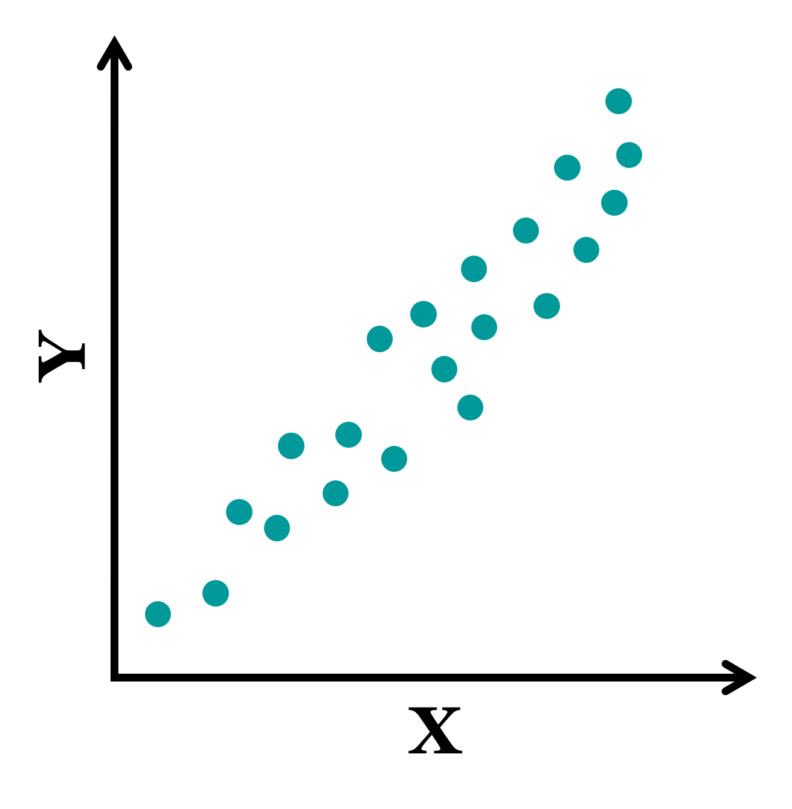
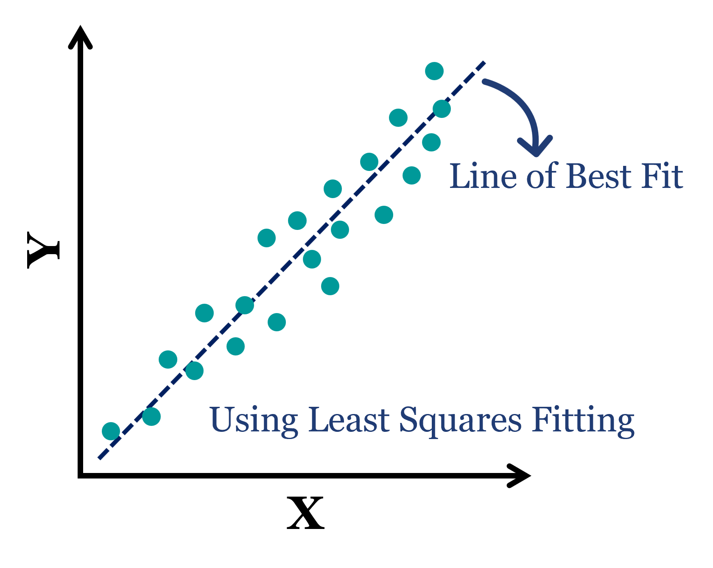
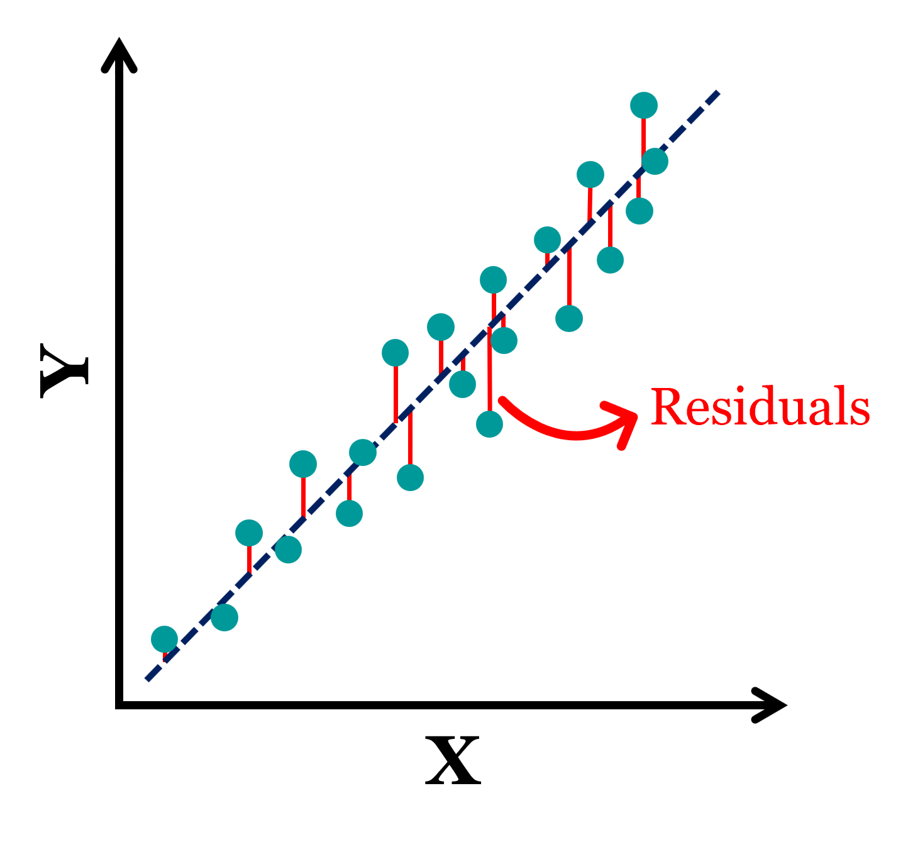
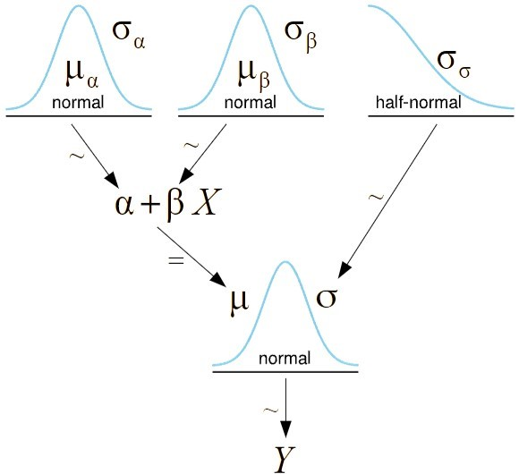
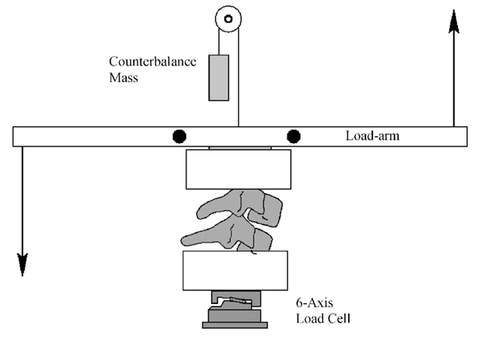
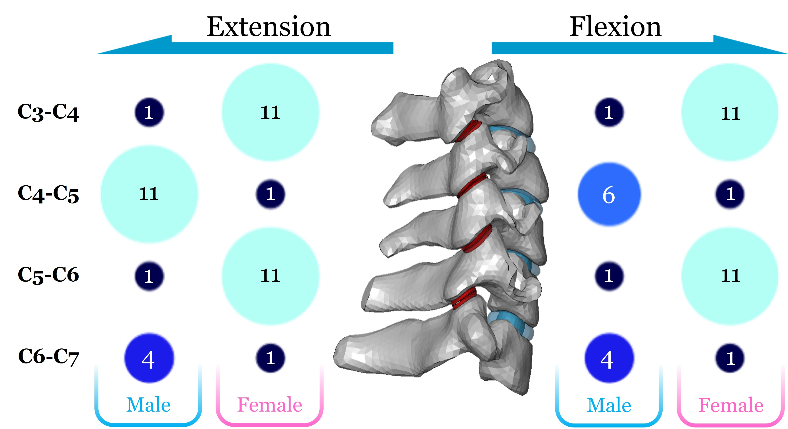

Lab Talk - 04 Mar 26
Pranav D | 3DIAM Lab
Hypothesis Testing – Frequentism

Bayesian Approach

Concept behind Linear Regression



Classical vs Bayesian Regression
MLE Approach
\[\begin{align} Y &= \alpha + \beta X ± \sigma\\ \\ \alpha &= \text{Constant (Intercept)}\\ \beta &= \text{Constant (Slope)}\\ \sigma &\sim \text{Normally distributed} \end{align}\]
Probabilistic Approach
\[\begin{align} Y &\sim \operatorname{N}(\mu,~\sigma)\\ \mu &= \alpha + \beta X\\ \alpha &\sim \text{A distribution}\\ \beta &\sim \text{Another distribution}\\ \sigma &\sim \text{Some other distribution}\\ \end{align}\]
Bayesian Analysis - In a nutshell

Cervical Segment Kinematics
A Bit of Background…
A Bit of Background…

Experimental setup used by Nightingale et al.
Exploratory Data Analysis

Current Model
Objective Function:
\[ Min.~~f(x)=2e^x-x^3-10x \]
Design Space:
\[ \begin{aligned} x &\in [0, 10] \\ \end{aligned} \]
Initial point and increment:
\[ x_0 = 0\\ \triangle x = 2 \]
After Solving…
- Terminated after 1st Iteration
- Minima lies between (0,4)

Q2. 2 Iterations of Golden Section Search


After Solving…
- Bounds shrunk to (2.472,4) (in blue)
- Size of the bracketed interval = 1.528
- Difference between the function value at bounds = 21.33

Q3. Solving analytically


Q4. Code for Exponential Search
function [a,b,k] = expsearch(f, x_init, d, t, max_iter)
if nargin < 4
max_iter = 100;
end
k = 0;
if f(x_init - abs(d),t) >= f(x_init,t) && f(x_init,t) >= f(x_init + abs(d),t)
d = abs(d);
elseif f(x_init - abs(d),t) <= f(x_init,t) && f(x_init,t) <= f(x_init + abs(d),t)
d = -abs(d);
else
disp("choose diff x_init or d")
return
end
x_k = x_init;
for i = 1:max_iter
x_k1 = x_k + (2^k) * d;
if f(x_k1,t) < f(x_k,t)
k = k + 1;
x_k = x_k1;
else
x_prev = x_k - (2^(k-1)) * d;
a = min(x_prev, x_k1);
b = max(x_prev, x_k1);
return
end
end
disp("max iters")
a = min(x_prev, x_k1);
b = max(x_prev, x_k1);
endCode for Region Halving
Combine both & Benchmark
sample_f = @sample_f;
[a_es,b_es,k_es] = expsearch(sample_f, 0, 2, 0, 100)
[a_ih,b_ih,l_ih,k_ih] = inthalving(sample_f, a_es, b_es, 0, 0.1)a_es = 0 // Lower bound in Exp. Search
b_es = 6 // Upper bound in Exp. Search
k_es = 1 // Number of iters in Exp. Search
a_ih = 2.8125 // Lower bound in Interval halving
b_ih = 2.9062 // Upper bound in Interval halving
l_ih = 0.0938 // Final size of the Interval
k_ih = 6 // Number of iters in Interval halvingQ5. Solving for Blackbox function
fn = @myfunction;
x_init = [2 0 2 5 0 0 6 0 0 10];
d_init = [5 1 5 10 1 1 1 1 1 1];
max_iter = 5000;
e = 0.1;
Case = (1:10).';
x_init = x_init(:);
d = d_init(:);
a_es = nan(10,1);
b_es = nan(10,1);
k_es = nan(10,1);
a_ih = nan(10,1);
b_ih = nan(10,1);
l_ih = nan(10,1);
k_ih = nan(10,1);
optima = nan(10,1);
fn_val = nan(10,1);
for c = 1:10
[a_es(c), b_es(c), k_es(c)] = expsearch(fn, x_init(c), d(c), c, max_iter);
[a_ih(c), b_ih(c), l_ih(c), k_ih(c)] = inthalving(fn, a_es(c), b_es(c), c, e);
optima(c) = (a_ih(c) + b_ih(c)) / 2;
fn_val(c) = fn(optima(c), c);
end
Results = table(Case, x_init, d, a_es, b_es, k_es, a_ih, b_ih, l_ih, k_ih, optima, fn_val);
disp(Results)Q5. Comparing the solutions
Case x_init d a_es b_es k_es a_ih b_ih l_ih k_ih optima fn_val
____ ______ __ ___________ ____ ____ _______ _______ ________ ____ _______ __________
1 2 5 -13 2 1 -10.334 -10.275 0.058594 8 -10.305 -1.6156
2 0 1 0 3 1 0.42188 0.51562 0.09375 5 0.46875 -0.36048
3 2 5 -13 2 1 -5.5293 -5.4707 0.058594 8 -5.5 -17.886
4 5 10 5 35 1 26.709 26.768 0.058594 9 26.738 -26.722
5 0 1 1 7 2 2.9688 3.0625 0.09375 6 3.0156 0.00024414
6 0 1 0 3 1 0.9375 1.0312 0.09375 5 0.98438 1.0156
7 6 1 5 6.5 0 5.0469 5.1406 0.09375 4 5.0938 44.49
8 0 1 0 3 1 2.9062 3 0.09375 5 2.9531 0.0021973
9 0 1 1 7 2 2.7812 2.875 0.09375 6 2.8281 -17.074
10 10 1 4.4942e+307 Inf 1023 Inf NaN NaN 1 NaN NaNComments
- Case 7 may contain a random fn
- Case 10 is just a straight line (100-2x)
Comments